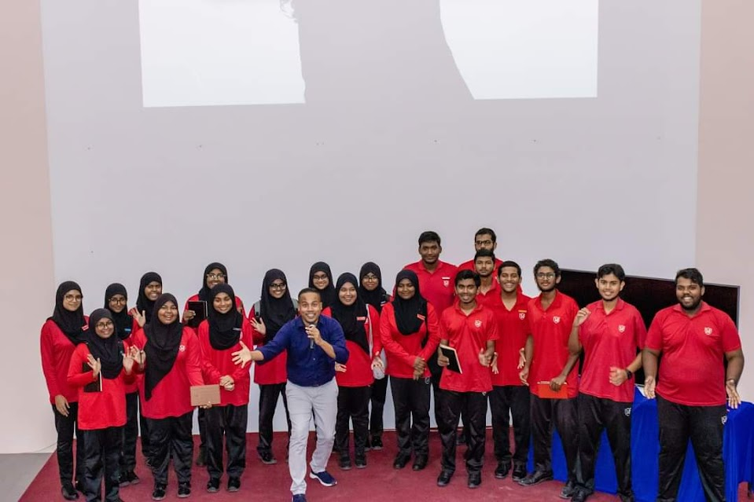

So the previous magaamu people and current magaamu people were told to go to MNU for some leaders training thing. it was actually just Hassan Afeef who is a motivation speaker, who made us do some TADAA stuff. We also were questioning whether he was maldivian or not because he was speaking in enlgish, then randomly started talking in dhivehi. Turns out he is from addu and he is actually the brother of the MNU kulhudhuffushi campus manager. Crazy.
All 3 schools went and it looks like it was fun for most people